Image and Vision Computing, November'14
The authors improve upon our previously proposed state-of-the-art tennis ball tracking algorithm.
Employ audio signal processing techniques to detect key events and construct features for classifying the events
Model event classification (serve, hit, bounce, net, and null) as a sequence labelling problem
Similar: Object Detection and Tracking Based on Trajectory in Broadcast Tennis Video
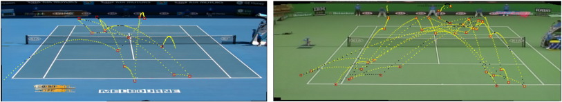MITSSC'13
1. Find the factors such as location and speed of the incoming shot which are most conducive to a player hitting a winner
(i.e. “sweet-spot”) or cause an error.
2. Do “live in-point” prediction - based on the shots being played during a rally we estimate the probability of the outcome of the next shot.
WACV'14, Best Paper
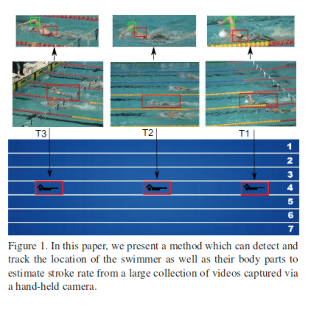CVIU, January'17
Automatic system for actions annotation in tennis video sequences for coaching needs. 3D ball trajectory reconstruction and player position detection. Strokes, serves, and bounces recognition from ball trajectory changes.
Also provides hardware architecture, processing modules to perform such analytics.
Good Reference Hunt!
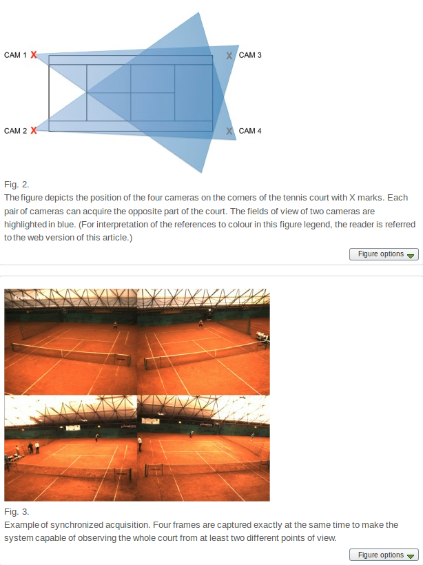ICAVSBS'13
Adapted a mono-camera detection and tracking system, originally designed for video surveillance to do sport analytics.
Extracts player trajecteries by computing homographies wrt to multiple cameras. Shows some simple statistics over it.
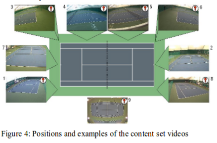Neural Processing Letters, February'13
They present a semi-parametric method for the automatic segmentation of a sport video and the extraction of its dominant regions, robust to different sport scenarios, without the need of camera calibration or background extraction.
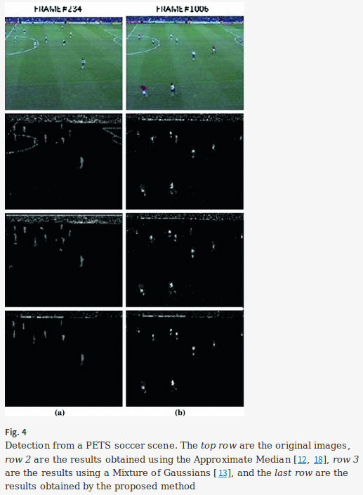CVPR'17 (Under Review)
Proposes an alternate approach exploiting the edge information and demonstrates its success in a specific scenario of registering football broadcast video frames on the static top view model of the playing surface.
International Conference on Image Analysis and Recognition (ICIAR) '07
Classifying the different tennis strokes (Forehand, Backhand and No Shot) is the prime goal of this project.
Algorithm uses the gradient information of the player's skeleton. The player is modeled using color histogram and tracked across the video using histogram back projection. An oriented histogram of the skeleton obtained in each frame forms the feature vector which is then sent to a SVM classifier.
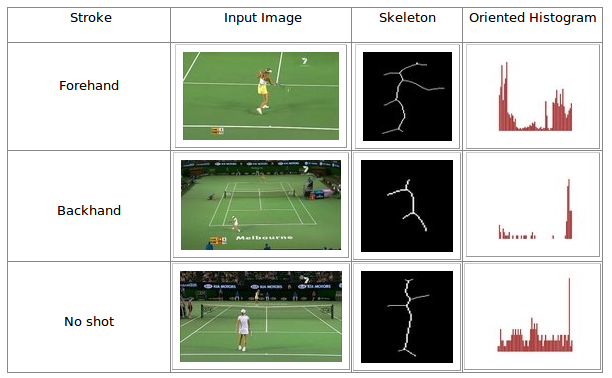CVIU, March'09
Our approach combines the structure event detection method with the highlight ranking algorithm
Firstly, unsupervised shot clustering and supervised audio classification are performed to obtain the visual and audio mid-level patterns respectively. Then, a temporal voting scheme for structure event detection is proposed by utilizing the correspondence between audio and video content. Finally, by using the affective features extracted from the detected events, a linear highlight model is adopted to rank the detected events in terms of their exciting degrees.
Human evaluation for highlights.
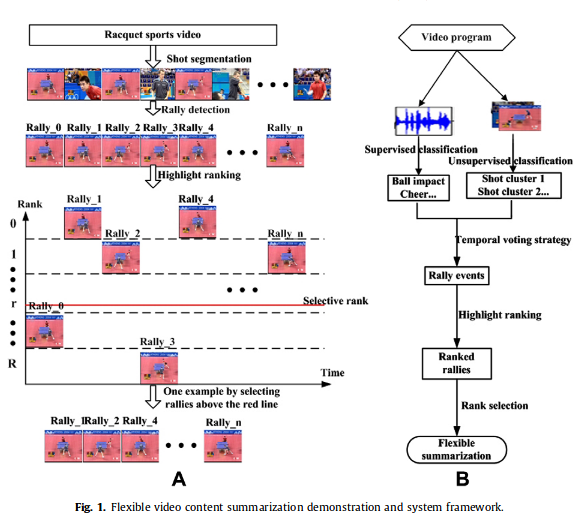MITSSAC'16, Best Paper
The authors show that a small set of features can be used to predict shot outcomes.
Using style priors, i.e. cluster players and forming player descriptors significantly improves performance
The handcrafted features are extracted from Hawk-eye data.
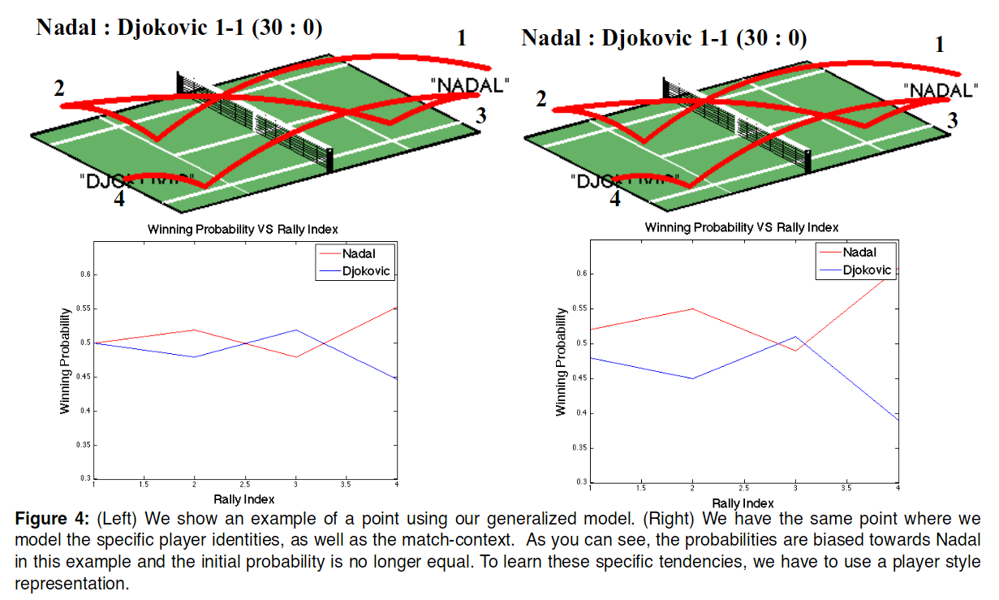Master's Dissertation
Used Computer vision techniques to collect statistics during badminton matches. The end result is a chronological list with statistics of every stroke played in a certain rally. Those statistics include the start and end zone of the stroke and the stroke type.
Similar: Badminton shot classification in compressed video with baseline angled camera
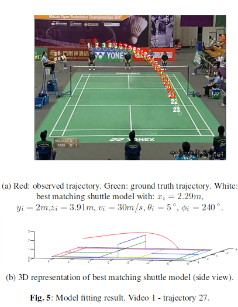ACM SIGKDD'13
Uses an entire football season of ball tracking data to reinforce the common held belief that teams should aim to “win home games and draw away ones”.
1. A representation of team behavior is formed by chunking spatiotemporal signal into a series of quantized bins.
2. Generated an expectation model of team behavior based on a code-book of past performance.
Expert Systems with Applications'09
Proposes the use of computational intelligence strategies and information from both the audio and video domains to automatically locate sporting highlight on personal video playback devices.
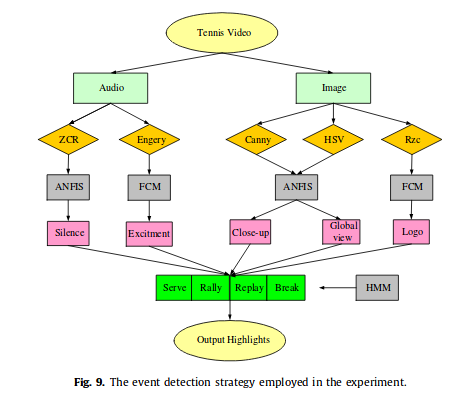Multimedia Tools and Applications, December'14
Comparing to other set ups, the main contribution of this work lays on the utilization of an unique camera per border line to extract 3D bounce point information.
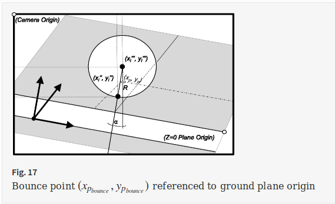Sports Engineering, July'11
The method used records racket and ball movement in 3D, intrudes minimally into the player’s environment. The method allows accurate measurement of ball and racket speeds, impact positions, and angular velocities of the racket in three-dimensions.
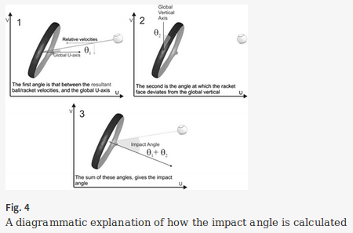Workshop on Multimedia Signal Processing'04
Designed an efficient and accurate temporal segmentation of the video into segments homogeneous w.r.t. the camera motion.
Focus on the creation of a selective summary containing the best winning serves and rallies of the match, using "applause" and "ball hit" clusters.
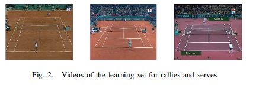BMVC'07
We extend our previous work to track multiple tennis balls fully automatically. The algorithm presented in this paper requires the set of all-pairs shortest paths in a directed and edge-weighted graph.
We also propose an efficient All-Pairs Shortest Path algorithm by exploiting a special topological property of the graph.
Prev: A Tennis Ball Tracking Algorithm for Automatic Annotation of Tennis Match, BMVC'05
ICIP'03
Instead, we search for highlights at places where strong excitement is evoked in the user by the content of a video. It is namely realistic to assume that independent of the type of a highlighting event, each such event induces an increase in user's excitement. We mimic the changes in user's excitement by observing the temporal behavior of domain-independent audiovisual signal properties and the editing scheme of a video.
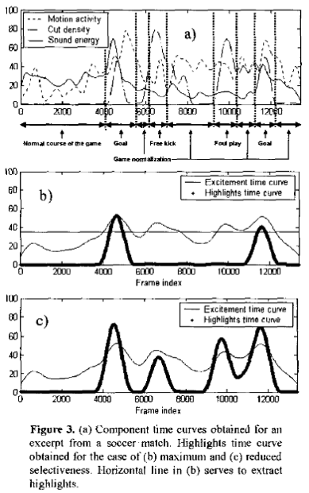